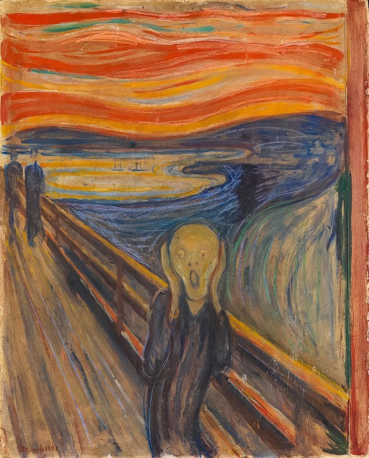

Las últimas etiquetas estudiadas (formateadores de texto, citas, direcciones, color, abreviaturas…), diseña tu web para contener el siguiente texto.
Revisado por Andrea Imaginario • Especialista en Artes, Literatura Comparada e Historia
El grito es una obra del pintor noruego Edvard Munch, cuyo título original es Skrik (Scream en inglés). Debido a su fuerza expresiva, esta pintura es considerada un antecedente del movimiento expresionista. El grito es el cuadro más famoso de Munch, quien realizó diferentes versiones del mismo a lo largo de los años.
El grito .1893 . Óleo y pastel sobre cartón. 91 x 73,5 cm.Galería Nacional de Oslo,Noruega.
Según Andrea Imaginario: El grito presenta a una figura andrógina en primer plano con un gesto de angustia que transmite gran expresividad y fuerza psicológica.
Edvard Munch comentaba de sus pinturas que el arte surge del interior del hombre:
Una obra de arte solo puede venir desde el interior del hombre. El arte es la forma de la imagen que se forma sobre los nervios, el corazón, el cerebro y los ojos del hombre.
Museos como el MAC (Museo de arte comtemporáneo) de Madrid o el IVAM (Instituto Valenciano de Arte Moderno) de Valencia estarían encantandos de exponerlo entre sus pinturas.
El museo de Israel, dijo en su momento: אדוורד מונץ 'תמיד היה אסמכתא באקספרסיוניזם (Edvard Munch ha sido siempre referente en el expresionismo).